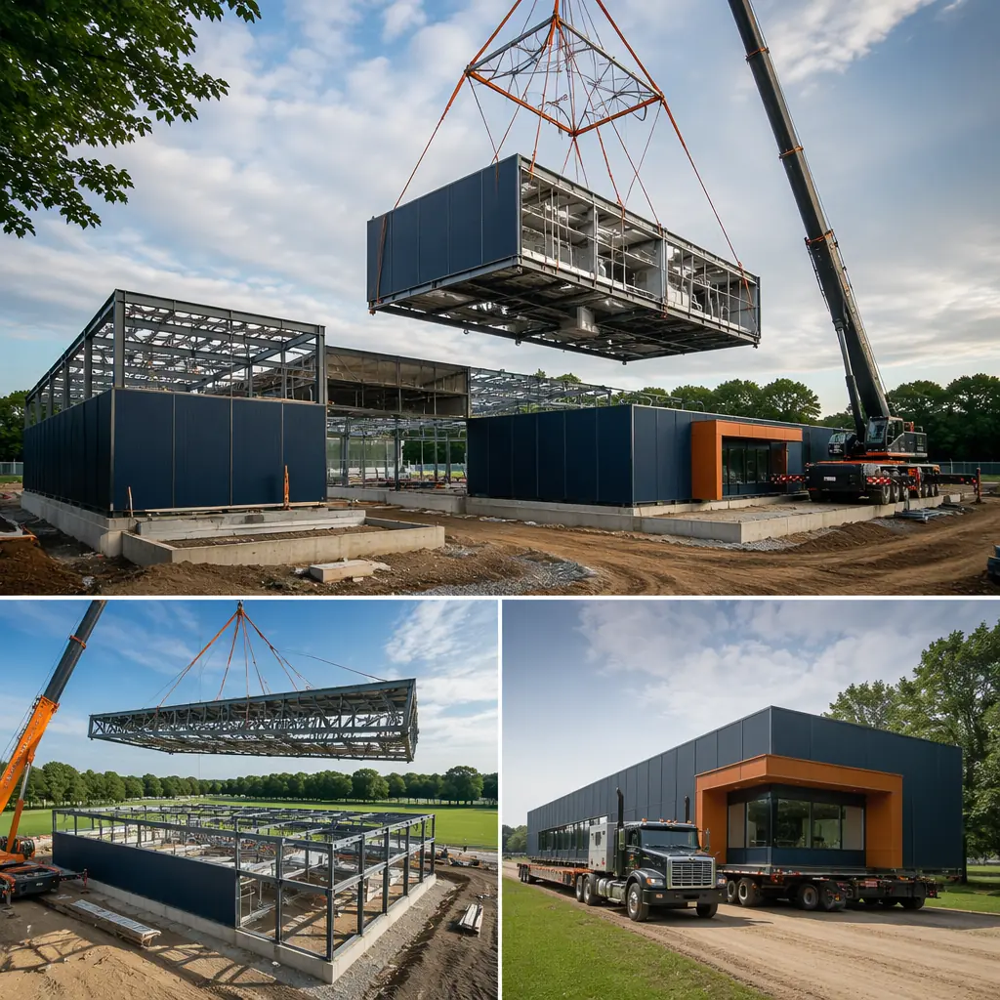
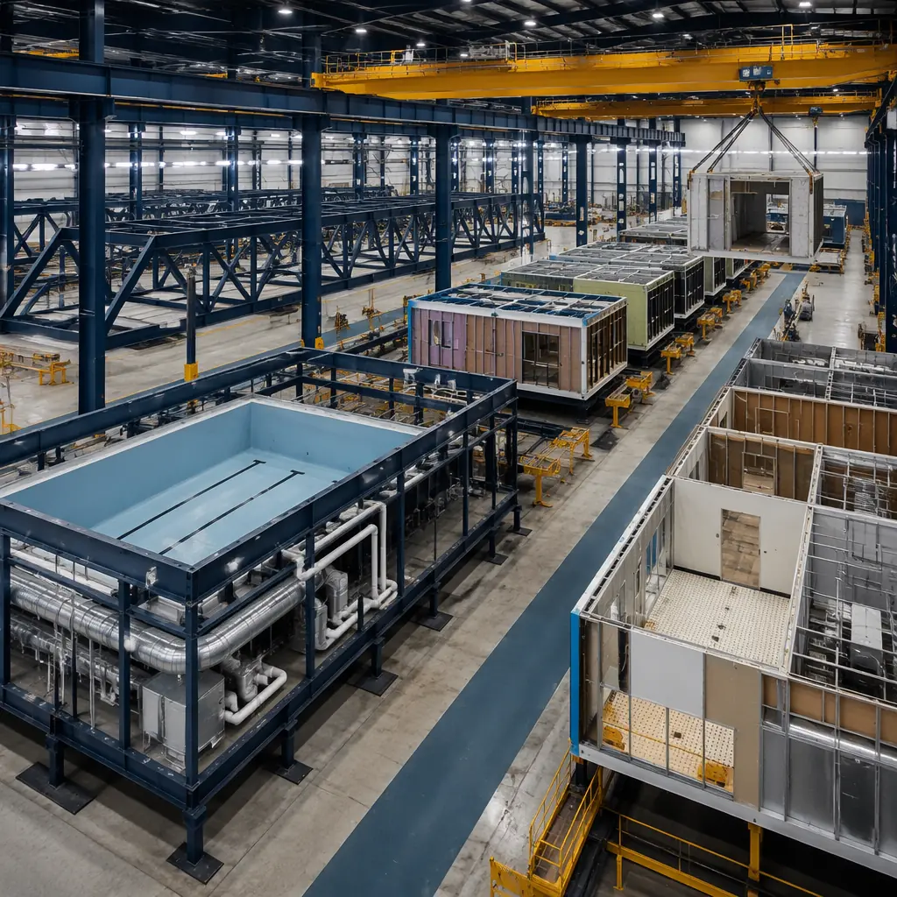
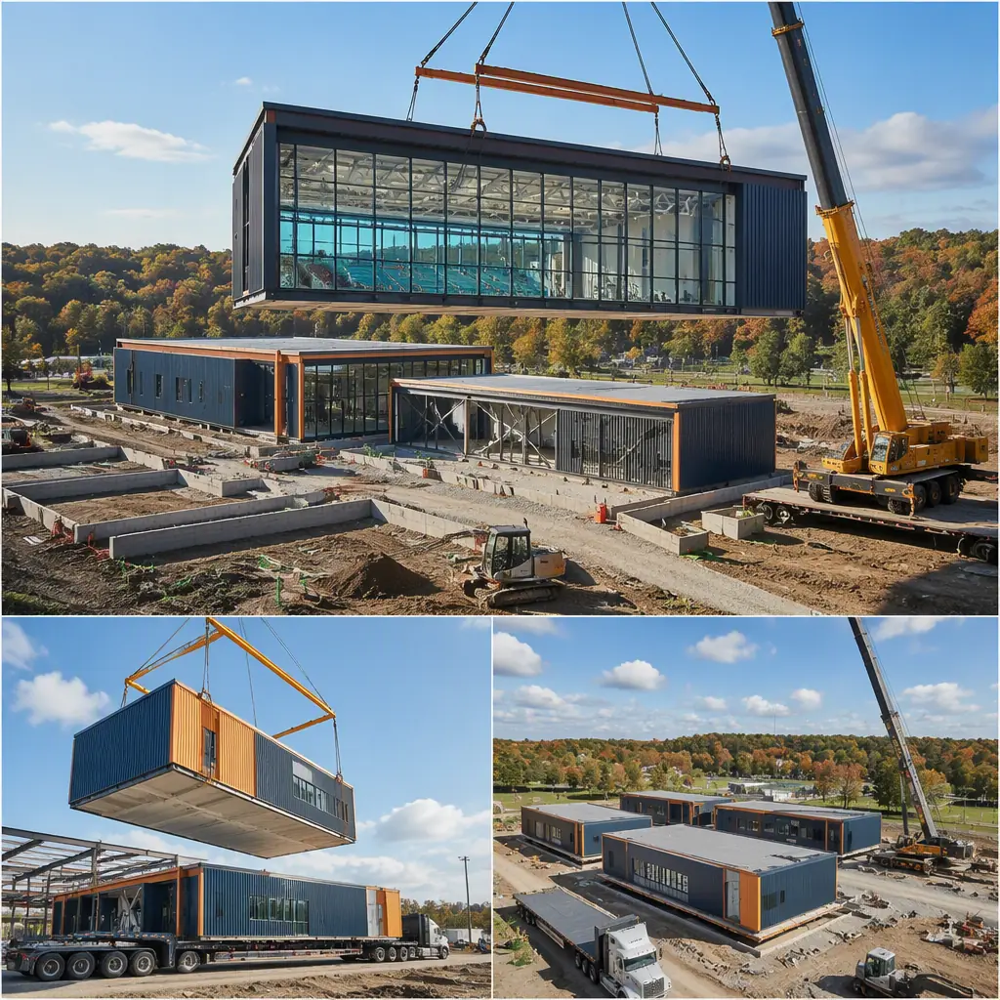
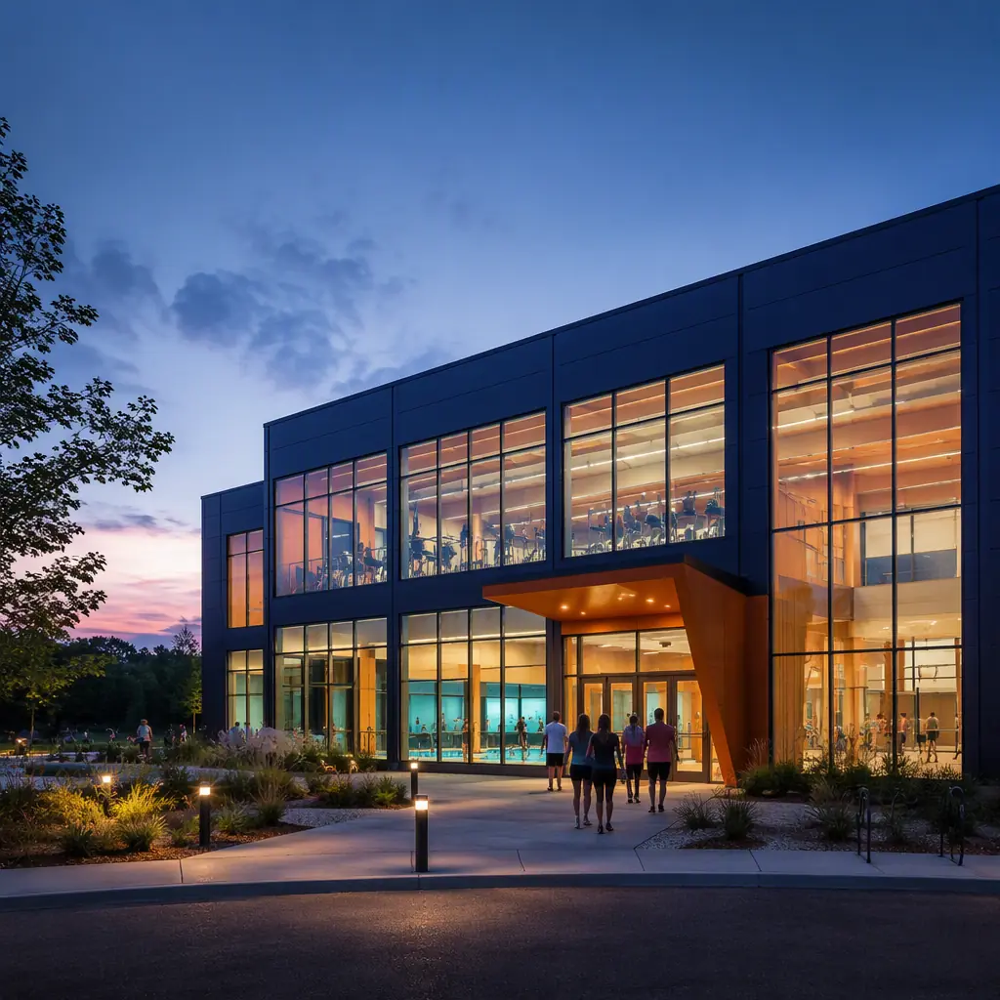

Community recreation centers are among the most politically visible and logistically complex municipal building projects. A single facility may combine an eight-lane competition pool, two basketball courts, a fitness center, multipurpose rooms, and locker facilities under one roof — each with distinct structural, mechanical, and humidity-control requirements that make conventional construction a 24–36 month undertaking from bond approval to ribbon-cutting. For the parks and recreation department that spent 2 years building community support for the bond measure, watching another 3 years pass before the first swimmer enters the pool is a political liability. Modular prefabricated construction compresses the delivery timeline to 14–20 months by building natatorium modules, gymnasium structures, and support spaces concurrently in a factory while site work proceeds — and delivers the construction quality assurance that municipal procurement officers increasingly require. This article examines the unique engineering demands of aquatic and recreation facilities, how modular construction meets them, and the cost and schedule comparison that makes modular the preferred approach for municipalities that measure project success in community access, not just construction completion.

Why Municipal Recreation Projects Need Modular: Schedule Certainty and Political Accountability
Municipal construction projects operate under a unique set of constraints that make modular delivery particularly compelling. Three factors drive the case:
Bond expenditure deadlines. For a deeper look, our modular community health centers — rapi… guide covers the details. Most community recreation centers are funded through general obligation bonds with statutory expenditure deadlines — typically 3–5 years from issuance. A conventional construction project that encounters a 6-month delay from weather, labor shortages, or change orders risks missing its bond expenditure deadline, triggering complex reallocation processes or, in worst cases, returning unspent bond proceeds to taxpayers. Modular construction's factory-controlled production schedule is immune to weather delays and labor availability fluctuations — the manufacturing workforce is permanent, not project-by-project — providing the schedule certainty that bond counsel and municipal finance directors need to certify compliance.
Public accountability for timeline promises. When a city council approves a $35 million recreation center and tells constituents "open in 2027," every month beyond that date generates negative press coverage, council meeting complaints, and erosion of trust in municipal project management. Modular construction's compressed and predictable timeline — 14–20 months versus 24–36 months — not only delivers the facility sooner; it delivers it within a narrower window of schedule uncertainty. The city's communications team can announce an opening date with confidence because the factory production schedule is not subject to the variables that routinely delay site-built projects. Modular government and municipal buildings covers the full procurement and public accountability framework for public-sector modular projects.
Phased delivery for uninterrupted community programming. For a deeper look, our modular religious buildings & community c… guide covers the details. Many recreation center projects replace an existing facility that must remain operational during construction — the current pool stays open, the basketball league continues its season, the senior fitness program maintains its schedule. Conventional construction's on-site activity — demolition, excavation, material delivery, construction traffic — makes this coexistence extremely difficult. Modular construction concentrates the disruption into the foundation and module-setting phases (4–8 weeks total on site), during which the existing facility can operate on a modified schedule. The 10–14 months of module production happen off site, invisible to the community, allowing uninterrupted programming during the majority of the project timeline.

Engineering Aquatic Facilities: Humidity Control, Pool Basin Integration, and Structural Demands
Indoor aquatic facilities present engineering challenges that exceed any other building type in municipal construction. A 5,000 sq ft pool hall contains approximately 100,000 gallons of water at 80–84°F, generating 200–400 pounds of evaporation per hour that must be removed by the HVAC system to prevent condensation on structural steel, mold growth in wall cavities, and corrosion of exposed metal surfaces. Modular construction addresses these challenges through factory-integrated systems rather than field-coordinated installations:
- Natatorium HVAC and dehumidification. Indoor pools require dedicated outdoor air systems (DOAS) with energy recovery, capable of maintaining 50–60% relative humidity and a dew point 2–3°F below the coldest surface temperature in the space. In conventional construction, the dehumidification unit, supply ductwork, return air plenum, and condensation drainage are installed by separate mechanical, sheet metal, and plumbing contractors — creating coordination complexity and quality risk at every interface. In modular construction, the entire pool hall HVAC system is factory-installed: dehumidification unit mounted, ductwork run and sealed, condensation drains connected and tested — all verified as a complete system before the module ships. MEP systems integration covers the factory approach to complex mechanical systems in modular buildings.
- Pool basin and pool deck integration. A competition pool basin — whether stainless steel, reinforced concrete, or fiberglass — must be installed to elevation tolerances of ±1/8 inch across 75 feet of gutter line. Modular construction allows the pool basin to be set and leveled in the factory, with the surrounding pool deck module poured and finished to the exact basin elevation, before the integrated natatorium module ships. Site-built pool construction requires the basin contractor, pool deck concrete contractor, and tiling contractor to achieve these tolerances in the field — a coordination challenge that frequently results in elevation mismatches requiring expensive corrective grinding or overlay. Concrete construction systems covers the factory approach to precision concrete work in modular structures.
- Corrosion-resistant materials specification. Every material in a natatorium must be selected for the chlorine-laden, high-humidity environment: 316L stainless steel for all exposed metal (304 stainless will pit within 3–5 years in pool air), epoxy-coated structural steel, moisture-resistant gypsum board with fiberglass mat facing, and PVC or aluminum window frames (never uncoated steel or wood). Modular factory construction ensures these material specifications are applied consistently — the same 316L fasteners, the same epoxy coating thickness, the same moisture-resistant board — across every module, eliminating the field substitution risk that occurs when a site subcontractor installs standard-grade materials that will fail prematurely in the pool environment.
Clear-Span Gymnasium and Court Structures
A standard high school basketball court requires a 50-foot by 84-foot clear span with a 25-foot minimum ceiling height — dimensions that push the limits of conventional modular framing but are achievable with factory-assembled steel truss modules. The approach is to build the gymnasium as a series of clear-span modules, each containing a 20–30 foot bay of the overall gymnasium width, with the roof trusses integrated into the module frame at the factory:
The structural logic is straightforward: a 50-foot clear span can be achieved with factory-welded steel trusses at 10-foot centers, each truss pre-assembled and integrated into a module frame that includes the perimeter columns, the roof beam, and the lateral bracing system. When these modules are connected on site, the trusses align across module joints to create a continuous clear-span volume. This approach has been validated on modular gymnasium projects up to 70-foot clear spans, with the limiting factor being transportation width (typically 14–16 feet maximum per module on standard flatbed trailers). Steel frame modular construction and modular sports stadiums and arenas provide additional structural and case study data for large-span modular sports facilities.
For a two-court community center (100 feet by 84 feet clear span), the modular approach divides the volume into five 20-foot-wide modules, each 84 feet long and 28 feet tall at the roof peak. The modules are built horizontally in the factory and transported on their sides — a specialized transport configuration that requires route planning and escort vehicles, but is standard practice for oversize modular deliveries. The 5-module gymnasium is set on its foundation in a single week, weather-sealed at the module joints in a second week, and ready for court flooring installation in week three — compared to 12–16 weeks for conventional steel erection, roof decking, and enclosure of the same volume.

Cost Comparison: Municipal Recreation Center — Modular vs Conventional
The following cost analysis represents a 45,000 sq ft community recreation center prototype: 8-lane competition pool with spectator seating, two basketball courts, fitness center, two multipurpose rooms, locker rooms, and lobby — the typical program for a mid-sized suburban municipality:
| Cost Category | Conventional | Modular | Delta |
|---|---|---|---|
| Building shell & enclosure | $5,850,000 | $5,100,000 | −$750,000 |
| MEP systems (incl. pool HVAC) | $3,400,000 | $2,900,000 | −$500,000 |
| Pool basin & aquatic systems | $2,100,000 | $1,850,000 | −$250,000 |
| Site work & foundation | $2,200,000 | $2,200,000 | — |
| Design & professional fees | $1,350,000 | $1,100,000 | −$250,000 |
| Construction timeline (months) | 30 | 18 | −40% |
| Total hard + soft costs | $14,900,000 | $13,150,000 | −$1,750,000 (12%) |
Beyond the $1.75 million in direct cost savings, the 12-month earlier opening generates approximately $600,000–$900,000 in membership, program, and rental revenue that the municipality forfeits during the additional year of conventional construction. For a parks and recreation department operating under a cost-recovery mandate from city council, this revenue acceleration can fund the next facility improvement project without requiring additional bond debt. Modular ROI analysis and cost benchmarks provide the financial modeling framework to present to municipal finance committees. For municipalities concerned about long-term operating costs, modular energy efficiency and lifecycle maintenance costs demonstrate the total cost of ownership advantage of factory-built, tighter-envelope modular structures.
Community recreation centers are the buildings where a municipality's promise to its residents becomes physical — the pool where kids learn to swim, the court where leagues compete, the fitness center where seniors maintain their health. Delivering that promise 12 months sooner, for $1.75 million less, with the quality assurance of factory production, is what makes modular construction the method that progressive parks and recreation departments are choosing as their default delivery approach.
